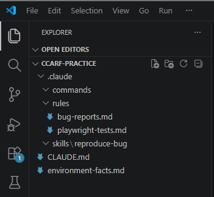

Domain 3 doesn't test whether you can write a prompt. It tests whether you can configure the tool that runs the prompt, correctly enough that a teammate who never talks to you still gets the right conventions, the right context, and the right guardrails the moment they clone the repo.
Configuration bugs are a different species from prompt bugs. A bad prompt fails loudly, you see the wrong answer. A bad config fails silently: a rule file with the wrong glob pattern just never loads, and nothing tells you it didn't.
Four things D3 actually asks you to know
CLAUDE.md hierarchy: user, project, directory. @import to stay modular. .claude/rules/ for path-scoped conventions a directory structure can't express.
A command is a shared shortcut. A skill has frontmatter: context: fork for isolation, allowed-tools for restriction, argument-hint for usability.
Plan mode for architectural decisions and multi-file changes. Direct execution when the scope and the fix are both already obvious.
Concrete examples over prose when interpretation is inconsistent. Test-driven iteration. The interview pattern to surface what you hadn't anticipated.
-p for non-interactive mode, --output-format json with --json-schema for machine-parseable output a pipeline can act on.
Part 1: config that a new teammate actually inherits
The failure mode Task Statement 3.1 (exam guide) names directly: a developer isn't getting your instructions because they live in your personal ~/.claude/CLAUDE.md, not the project's. It works for you and nobody else, and the gap is invisible until someone's output quietly stops matching the standard.
Only project-scoped config is in version control. A rule that lives in someone's home directory is a rule that exists for an audience of one.
PeakAndPack's tests aren't confined to one directory. A glob like tests/**/*.spec.ts reaches all of them, a directory-bound file can't.
Diagnosing this in practice: the exam guide's own skill point for 3.1 is running /memory to see which files actually loaded. If a teammate's output doesn't match the standard, that's the first thing to check, not a longer prompt.
- d3-claude-md/CLAUDE.md: a real project-level CLAUDE.md for PeakAndPack QA work
- d3-claude-md/environment-facts.md: pulled in via
@import, always loaded, not path-scoped - d3-claude-md/rules/playwright-tests.md: path-scoped to
tests/**/*.spec.ts, discovered independently, no import needed - d3-claude-md/rules/bug-reports.md: path-scoped to
reports/**/*.md
How to use it: new to the capsule? The hub's before-you-start section covers installing Claude Code and why you don't need PeakAndPack's source, no need to repeat that here. Inside your working folder, this post additionally needs a .claude/rules subfolder, run mkdir -p .claude/rules if you don't already have it, then commit these:
| File on this page | Save it to | Verify with |
|---|---|---|
| d3-claude-md/CLAUDE.md | .claude/CLAUDE.md | /memory |
| d3-claude-md/environment-facts.md | .claude/environment-facts.md | /memory |
| d3-claude-md/rules/playwright-tests.md | .claude/rules/playwright-tests.md | open a file matching tests/**/*.spec.ts, then /memory |
| d3-claude-md/rules/bug-reports.md | .claude/rules/bug-reports.md | open a file matching reports/**/*.md, then /memory |
These two won't show up in /memory right after setup, and that's correct, not broken. Path-scoped rules only load once Claude is actually working on a file matching their glob, that's the entire mechanism Task Statement 3.3 tests: conditional loading, not always-on like CLAUDE.md. Open a matching file first, or ask Claude to edit one, then check /memory again.
Try it: create tests/example.spec.ts (any content) and ask Claude to write a test in it, or just open the file. Then run /memory, rules/playwright-tests.md should now be listed as loaded. Ask Claude to summarize the testing conventions it's following, the answer should match what's in that file, not a generic default.

Part 2: a command everyone gets, a skill that stays contained
Both live under .claude/ and both get invoked with a slash, but they're not the same tool. A command is a shortcut, the same prompt every time, shared the moment it's committed. A skill carries frontmatter that changes how it runs: context: fork isolates it, allowed-tools restricts it, argument-hint tells a developer what to pass.
Reproducing a bug against a cold-starting Render API means retries and raw HTTP responses. Forking keeps that noise out of the conversation doing the actual triage.
allowed-tools: ["Bash", "WebFetch"] means this skill cannot write a file or run a destructive command, whatever the prompt asks it to do.
Choosing between skills and CLAUDE.md is choosing between on-demand invocation for a task-specific workflow, and an always-loaded standard nobody has to remember to run.
- d3-triage-command.md: the
/triage-bugcommand, project-scoped, reuses D1's bug catalog - d3-reproduce-skill/SKILL.md: a skill with
context: fork,allowed-tools, andargument-hintall set deliberately, not defaults
How to use it: run mkdir -p .claude/commands .claude/skills/reproduce-bug if you don't already have these two folders, save each file, then invoke it. The /reproduce-bug trigger name comes from the folder, but the file inside it must still be named exactly SKILL.md, not renamed, or Claude Code won't recognize it as a skill at all. If you add either file to an already-running Claude Code session, exit and start a fresh session (claude again) before invoking it, commands and skills are discovered at startup, not picked up live.
| File on this page | Save it to | Verify with |
|---|---|---|
| d3-triage-command.md | .claude/commands/triage-bug.md | /triage-bug, then a failing test's output |
| d3-reproduce-skill/SKILL.md | .claude/skills/reproduce-bug/SKILL.md | /reproduce-bug BUG-007 |
Try it: /triage-bug needs the failing test's output pasted right after it, in the same message, or Claude has nothing to classify and will ask for it instead of guessing. Paste this whole block in:
/triage-bug Test: "product list has no negative prices"
Expected: products.every(p => p.price >= 0)
Actual: false. Failing item: { id: 4, name: "Sleeping Bag (-15C)", price: -89 }Expect a verdict matching BUG-001, high confidence, one sentence of reasoning. Five more ready-made scenarios, including one deliberately not in the catalog, are in d1-triage-scenarios.md. /reproduce-bug is simpler, just a bug ID or description as the argument, e.g. /reproduce-bug BUG-007, as shown in the table above.
Part 3: plan mode is a decision, not a mood
Task Statement 3.4 (exam guide) isn't asking whether you know plan mode exists. It's asking whether you can tell, before you start, which side of the line a given task falls on. Two real PeakAndPack fixes, reasoned through against the guide's own criteria:
The same bug, either side of the line: BUG-004 and BUG-007 could each be fixed alone as a Task-B-shaped change. What moves them into plan-mode territory is the decision to fix them together, because that turns a validation fix into a decision about where validation lives project-wide. Scope decides this, not bug severity or how the fix reads in isolation.
- d3-plan-vs-direct.md: the full reasoning for both tasks against the guide's stated criteria
How to use it: run its two criteria checks (multi-file? architectural? multiple valid approaches?) against your own next task before opening plan mode out of habit either way.
| File on this page | Save it to | Verify with |
|---|---|---|
| d3-plan-vs-direct.md | anywhere, it's a reasoning doc to read, not a file Claude Code loads | n/a |
Part 4: a reviewer with no memory of writing the code
Task Statement 3.6 (exam guide) is CI integration, and its least obvious knowledge point isn't a flag, it's session isolation: the same session that wrote a diff is a worse reviewer of that diff than a fresh one, because it already believes its own reasoning.
Without it, a pipeline runner sends the prompt, gets silence, and hangs until the job times out waiting for input that never comes.
A JSON schema turns findings into something a script can post inline, instead of a paragraph a script can only forward whole.
- d3-ci-review.sh: the full CI script, checkout-scoped, non-interactive, posts inline PR comments
- d3-review-schema.json: the JSON schema its findings are validated against
How to use it: wire the script into your CI workflow with ANTHROPIC_API_KEY set as a repo secret and gh/jq available on the runner. It's a no-op unless the PR's diff touches src/checkout/** or src/cart/**.
| File on this page | Save it to | Verify with |
|---|---|---|
| d3-ci-review.sh | anywhere in the repo, e.g. scripts/d3-ci-review.sh | chmod +x, then run manually or wire into CI |
| d3-review-schema.json | same folder as d3-ci-review.sh | used automatically via the script's --json-schema flag |
Try it, the easy version: in a plain git repo with no src/checkout/** or src/cart/** changes, just run chmod +x d3-ci-review.sh && ./d3-ci-review.sh. It should print "No checkout or cart changes in this PR, skipping review." and exit cleanly, confirming the no-op path works before you ever touch CI or a real PR.
The full version needs more: a real branch with changes under one of those two paths, ANTHROPIC_API_KEY set, and gh authenticated against a real PR (inline comments won't post without one). Worth doing once you're past the sandbox stage, not required to understand what the script does.
Part 5: getting Parts 1 through 4 right the first few times
Task Statement 3.5 (exam guide) isn't a fifth artifact, it's how the first four in this post actually got built. None of them worked on the first pass.
/triage-bug's first draft, told in prose to "summarize the failure clearly," produced a different shape every run. Two worked input/output examples fixed the format, prose alone hadn't.
Before writing the rules, asking Claude what would happen if a path-scoped rule and CLAUDE.md disagreed surfaced a conflict case that wasn't obvious from writing the rules alone.
The CI reviewer's prompt was shaped against three test PRs with known, pre-decided findings, sharing what it missed or over-flagged each round, not written once and trusted.
Bundled versus sequential: when the reviewer's prompt had two interacting problems at once, missing a real finding because a false-positive suppression rule was too broad, both went into one message, since fixing either alone risked reintroducing the other. An unrelated formatting complaint from a separate test PR was fixed on its own, in a later pass.
- d3-iterative-refinement.md: the before-and-after for all three techniques, the command's inconsistent first draft against its example-corrected version, the CLAUDE.md conflict the interview pattern surfaced, and the reviewer prompt's test-driven revision history
How to use it: reference doc, not a file Claude Code loads. Read it before assuming a first-draft command, rule, or CI prompt is done just because it ran once without an error.
The QA angle: config bugs have no stack trace
A wrong assertion fails a test, loudly, with a line number. A rule file scoped to the wrong glob just never loads, silently, and the only symptom is Claude quietly not following a convention nobody remembers to check for.
Testing configuration itself means testing for absence: create a decoy file outside a rule's glob and confirm the rule doesn't apply to it, run /memory after onboarding a fresh clone and diff what loaded against what you expected, and treat a CI review's schema validation failure as a finding in its own right, not just infrastructure noise to retry past.
D3 tests configuration as a set of concrete choices, not a vague "set things up well": project-level versus user-level CLAUDE.md (3.1), glob-scoped rules versus directory-bound ones (3.3), a shared command versus an isolated skill (3.2), plan mode versus direct execution against stated criteria (3.4), the techniques that actually got the first four artifacts right (3.5), and a CI pipeline that runs non-interactively with structured output (3.6). Every one of those showed up as a real file in this post, not a description of one.
Written by RN · The Quality Strategist · CCAR-F for QA